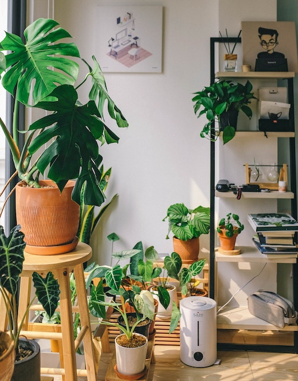

Welcome To "Plantastic living"
Step into a world where every leaf tells a story, and every petal unveils a fascinating secret. If
you're
intrigued by the wonder of houseplants and the art of nurturing them, you've found your digital
oasis.
'Plantastic Living' is your source for plant knowledge that enriches your daily life. Whether you're
a
seasoned green-thumb or just starting to dip your fingers into the soil, our blog is here to inspire
and
educate.
So, join me as I delve into the enchanting world of houseplants, one fascinating fact at a time.
Explore
the unique characteristics, benefits, and hidden wonders of the green companions that make your
indoor
environment truly 'Plantastic.'